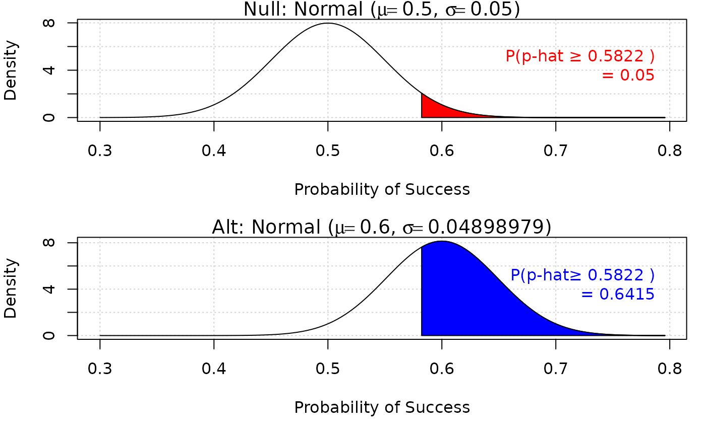
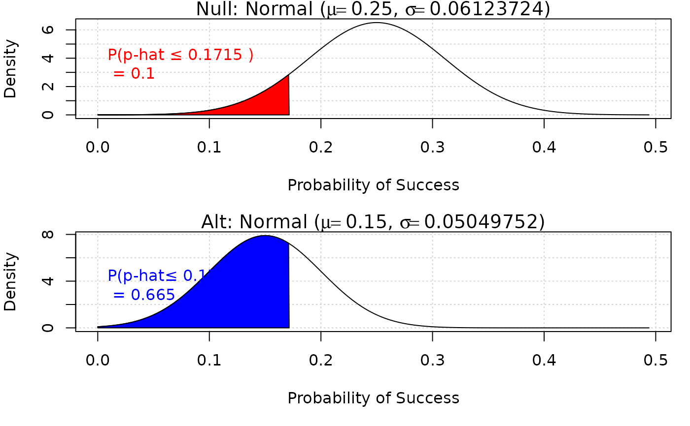
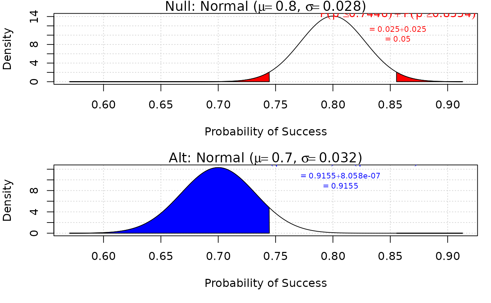

Rejection Region for Normal
iscamnormpower.Rdnormpower determines the rejection region corresponding to the level of
significance and the first probability and shows the normal distribution
shading its corresponding region.
Examples
iscamnormpower(0.05, n = 100, prob1 = 0.5, alternative = "greater", prob2 = 0.6)
#> Null: Probability 0.5822 and above = 0.05

#> Alt: Probability 0.5822 and above = 0.6414995
iscamnormpower(0.10, n = 50, prob1 = 0.25, alternative = "less", prob2 = 0.15)
#> Null: Probability 0.1715 and below = 0.1

#> Alt: Probability 0.1715 and below = 0.6650137
iscamnormpower(0.05, n = 200, prob1 = 0.8, alternative = "two.sided", prob2 = 0.7)
#> Null: Probability in rejection region 0.05

#> Alt: Probability in rejection region 0.9155